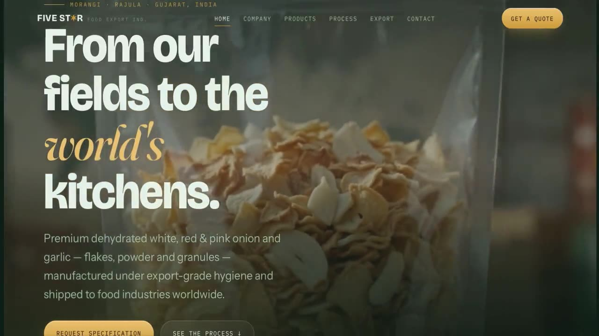
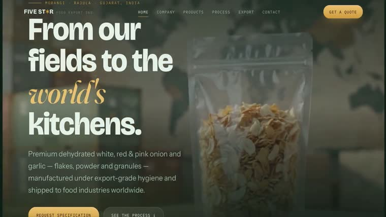
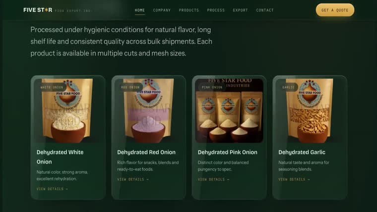
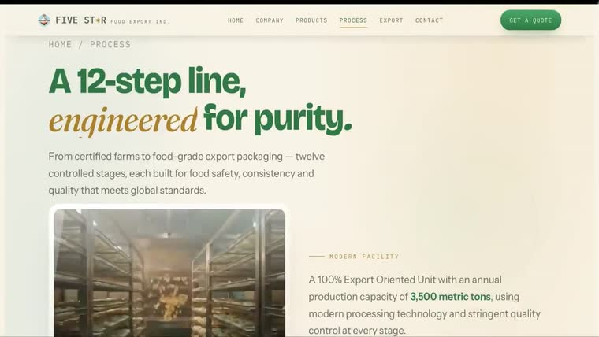
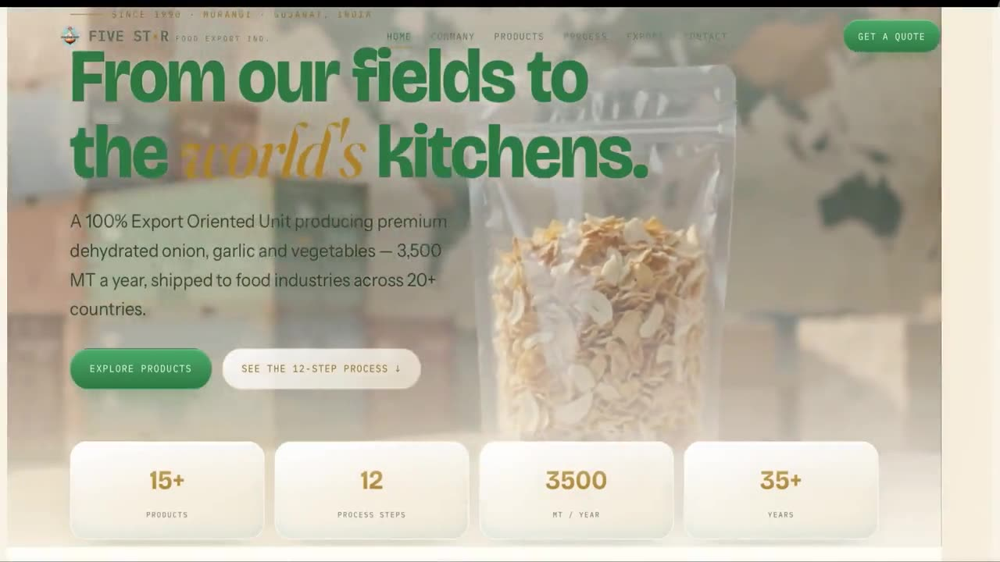

- Scope
- Full multi-page rebuild
- Status
- Live
- Palette
FIVE STAR FOOD EXPORT
Five Star Food Export has been dehydrating and shipping food for three and a half decades. The expertise was real and deep. The website gave away none of it.
- Client
- Five Star Food Export
- Scope
- Full multi-page rebuild
- Role
- Design, build, content structure
- Status
- Live
The brief
Export buyers are not browsing. They are assessing whether a supplier is credible, consistent, and capable of holding a standard across a large order. Nothing on the old site helped them decide that.
The raw material for the answer already existed inside the business — process documentation, product specifications, three and a half decades of operating history. It had simply never been treated as something worth showing.
The build
The centrepiece is their actual twelve-step dehydration process, rebuilt as a single scroll sequence. Each stage arrives as you move through it, in the order it genuinely happens on the floor.
The numbering here is not decoration — the process is a real sequence, so the order carries information the buyer needs. Watching the steps arrive one at a time is itself the argument for the company's rigour.
Two themes
The site ships in a dark and a light theme off the same token set — not two designs, one system with the surface values swapped. The product photography is the constant; everything around it inverts.
It matters commercially as well as visually: a buyer reading specifications on a phone in daylight and a buyer scrolling the process film in the evening are not the same reading condition, and the site does not have to pick one of them.

The detail
- Every fact is theirs. Fifteen-plus products, twelve process steps, 3,500 MT a year, shipped to 20+ countries, thirty-five years in operation. No stock claims and no invented statistics — each figure traces back to the company's own records, which is the only reason a serious buyer would trust any of them.
- A full product catalogue. Structured so a buyer can find a specification without emailing to ask for it.
- Built to be read on a phone in a warehouse. The audience is not sitting at a desk. Type sizes, contrast and tap targets were set for that context first.
What shipped
A live multi-page site that does what the old one could not: explain, in the company's own terms and with its own evidence, why thirty-five years of doing one thing carefully is worth paying for.